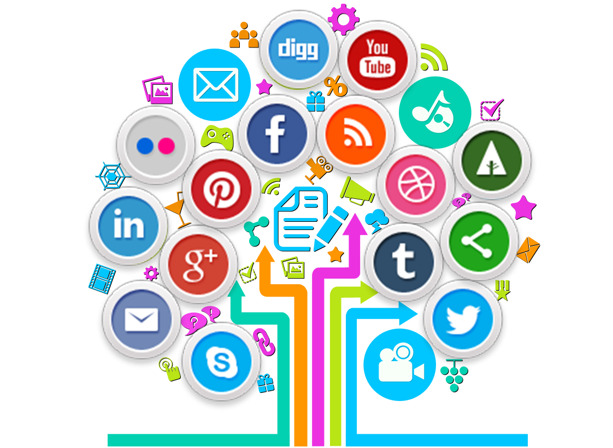
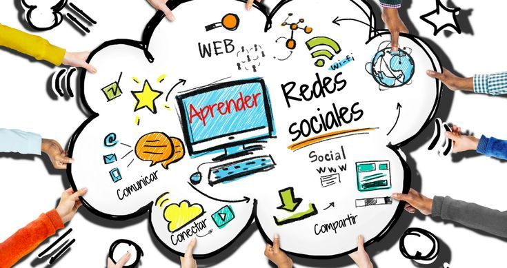

Impacto de las Redes Sociales en los Jóvenes
Cultura Digital
"La tecnología es mejor cuando acerca a las personas, pero debe usarse con responsabilidad."
Introducción
Las redes sociales se han convertido en una herramienta fundamental para la comunicación y el intercambio de información en la sociedad actual. Los jóvenes son uno de los grupos que más utilizan estas plataformas, ya que les permiten mantenerse conectados, aprender nuevos conocimientos y compartir experiencias. Sin embargo, su uso también puede generar efectos negativos cuando no se utilizan de manera adecuada.
¿Qué son las redes sociales?

Son plataformas digitales que permiten la comunicación e interacción entre personas. Actualmente forman parte de la vida cotidiana de millones de jóvenes.
Objetivo del Proyecto
Analizar el impacto que tienen las redes sociales en los jóvenes, identificando sus principales beneficios, riesgos y las acciones necesarias para fomentar un uso responsable de estas plataformas digitales.
Impactos positivos
- Facilitan la comunicación.
- Promueven el aprendizaje y el intercambio de conocimientos.
- Fomentan la creatividad.
- Ayudan a desarrollar habilidades digitales.
Impactos negativos
- Uso excesivo del tiempo en línea.
- Riesgo de ciberacoso.
- Distracción en actividades académicas.
- Problemas de autoestima por comparaciones sociales.
Uso responsable

- Establecer límites de tiempo.
- Proteger la información personal.
- Verificar la información antes de compartirla.
- Priorizar las relaciones y actividades fuera de internet.
Importancia de las Redes Sociales

Las redes sociales facilitan la comunicación inmediata entre personas de diferentes partes del mundo. Además, permiten acceder a información, oportunidades educativas y contenidos de entretenimiento que pueden contribuir al desarrollo personal y académico de los jóvenes.
Estadísticas Relevantes
- Más del 90% de los jóvenes utilizan redes sociales diariamente.
- WhatsApp, Instagram, TikTok y Facebook son algunas de las plataformas más utilizadas.
- Las redes sociales son empleadas tanto para entretenimiento como para actividades escolares.
- El tiempo promedio de uso puede superar las 3 horas diarias en muchos jóvenes.
Resumen de Ventajas y Desventajas
| Ventajas | Desventajas |
|---|---|
| Comunicación instantánea | Adicción al uso excesivo |
| Acceso a información | Desinformación |
| Aprendizaje en línea | Ciberacoso |
| Desarrollo de habilidades digitales | Problemas de privacidad |
Recomendaciones para Padres y Docentes
- Promover el diálogo sobre el uso seguro de internet.
- Supervisar el contenido consumido por menores de edad.
- Fomentar hábitos saludables y actividades fuera de línea.
- Educar sobre privacidad y seguridad digital.
Más Información
El uso equilibrado de las redes sociales puede aportar numerosos beneficios, como el acceso a recursos educativos, el fortalecimiento de habilidades digitales y la participación en comunidades de interés. Sin embargo, es importante mantener una actitud crítica ante la información encontrada en internet y evitar compartir datos personales con desconocidos.
Bibliografía
- UNESCO. Ciudadanía Digital y Educación.
- UNICEF. Guía de Seguridad Digital para Jóvenes.
- Instituto Federal de Telecomunicaciones (IFT). Uso de Internet en México.
- Google for Education. Recursos de Ciudadanía Digital.
Integrantes del Equipo
- Liz Betzaira Hilario De La Cruz
- Rocío Hernández De La Cruz
- Emmanuel Rojas Villegas
- Ángel Fernando Lara Vargas
- Arely Paola Zapata Sixto
Conclusión
Las redes sociales tienen un gran impacto en los jóvenes. Aunque ofrecen numerosos beneficios, también presentan riesgos. Por ello, es fundamental promover un uso responsable y consciente de estas herramientas digitales.